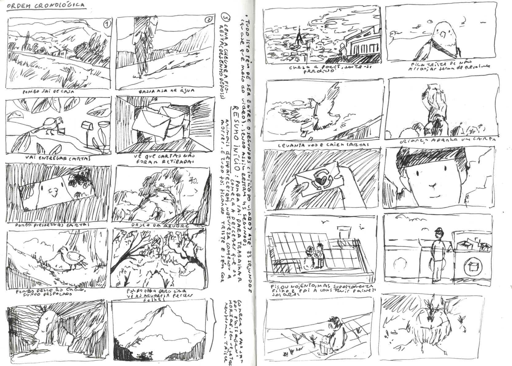
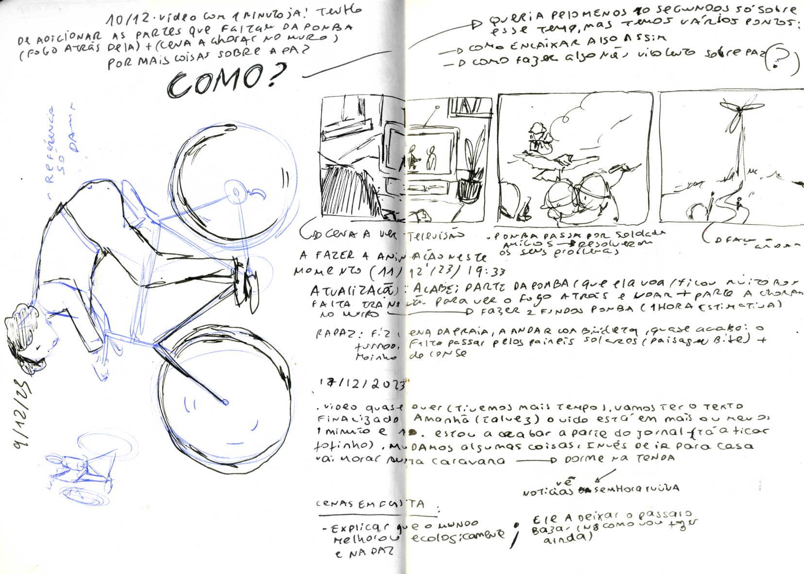
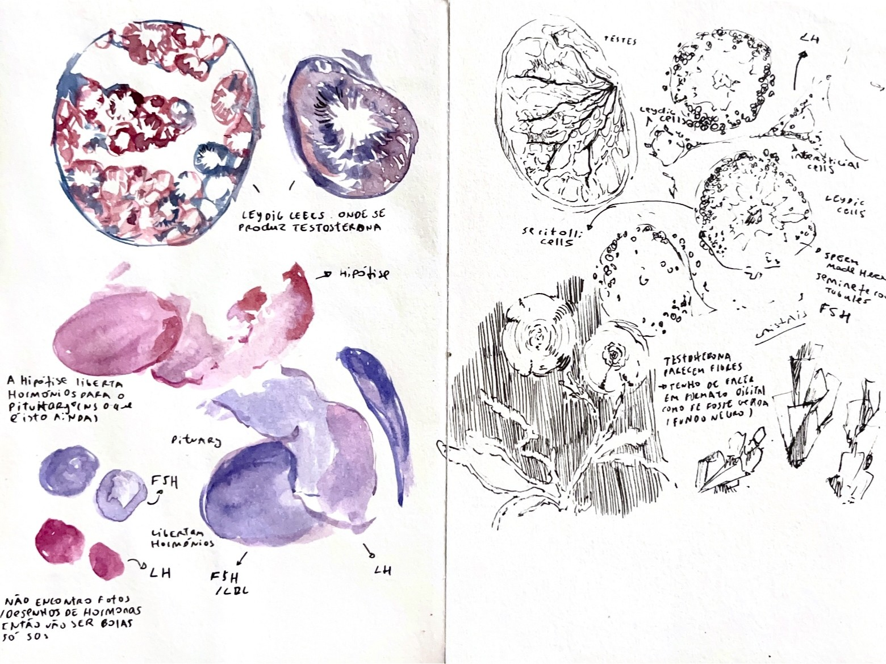
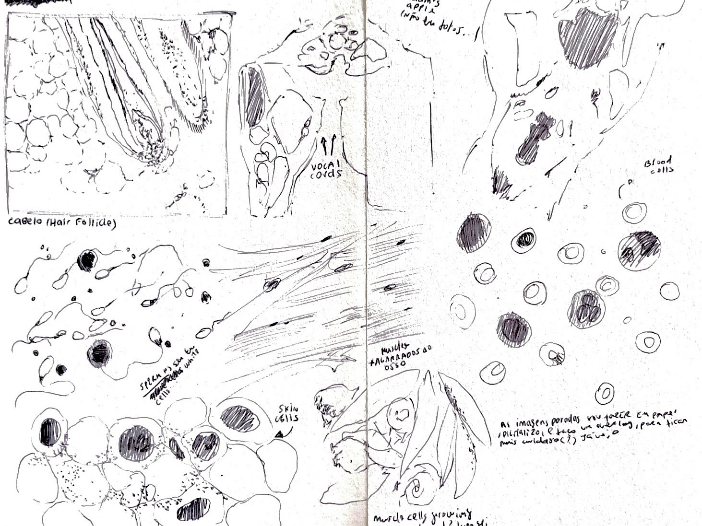
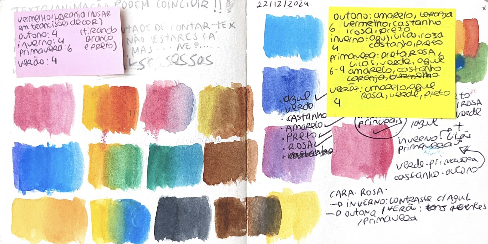
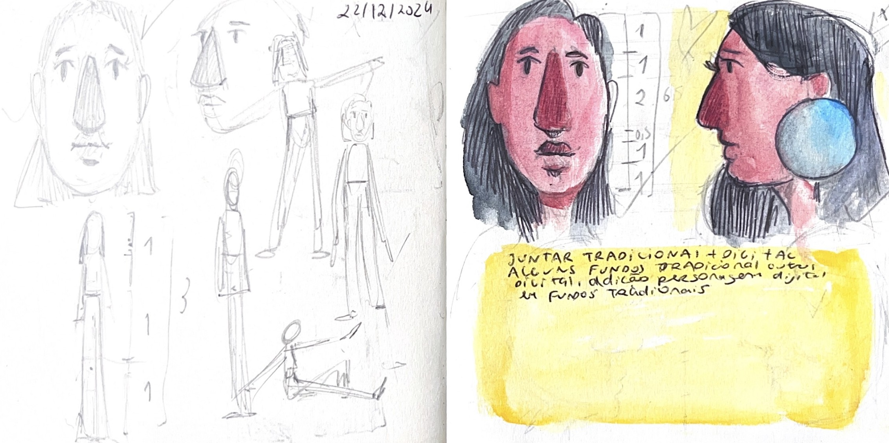
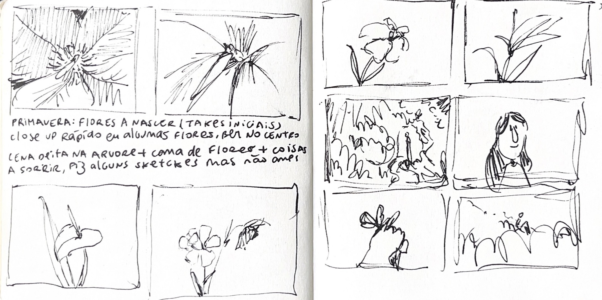
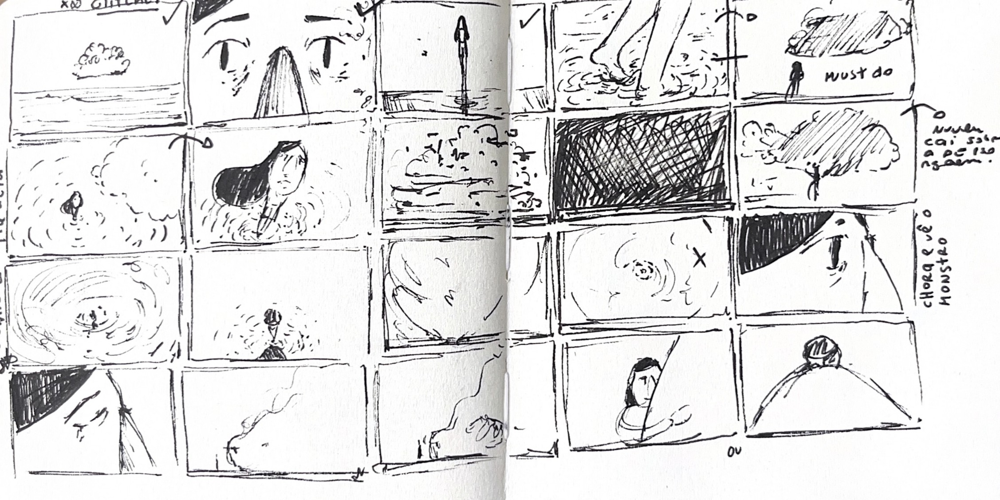

La Journné de la Paix
(2024)
"La Journné de la Paix" is an animation created for the contest "Quand le Son Crée L'image", a project made by Unesco in collaboration with "La Semaine du Son" and Cannes Film Festival.




Viril
(2025)
"Viril" takes us on an embodied journey through masculinity and the forces of testosterone. With a narration that is both scientific and introspective, the film invites us to reflect on the body, on manhood, and to ask — what does it truly mean to be virile?


Brisa de Verão
(2025)
"Summer Breeze" sails through the seasons and the memories, tracing the absence and the remembrance of someone who is no longer here. In this project, we follow the transformation of emotions over time, where each season unveils a new layer of feeling — from farewell to blooming, from absence to nostalgia.




Searching Love
(2024)
Alone in the vast universe, a young girl embarks on a journey to find something she cannot quite describe: love. Though she doesn’t know exactly what it looks like, her determination leads her through breathtaking views, numerous galaxies and planets around the universe and existential dilemas about the emptiness of this endless search for fullfilment.
Other videos
2024s-
During secondary school, I volunteered as a designer for a project called PNA, integrated in my school, aiming to bring culture and arts to the survice of society and education